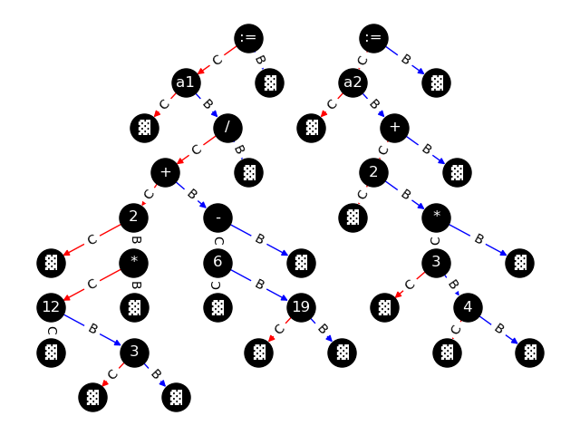

Compilers
Morteza Zakeri†
† Ph.D. Student, Iran University of Science and Technology, Tehran, Iran (m-zakeri@live.com).
Version 0.1.2 (29 March 2021) ├ Download [PDF] version

Abstract— Our IUST-Compiler Course is now more practical than ever. This repository contains several code snippets that I developed to teach the ANTLR compiler generator at Iran University of Science and Technology (UST). Grammars have been written in ANTRL v4 format. For each grammar, the source code of Lexer and Parser is available in Python 3.x.
The repository is assumed to be updated regularly. It would be appreciated if you use this repository by forking it. For any question please contact me m-zakeri@live.com
Introduction
The course is intended to teach the students the basic techniques that underlie the practice of Compiler Construction. The course will introduce the theory and tools that can be standardly employed to perform syntax-directed translation of a high-level programming language into executable code.
These techniques can also be employed in broader areas of application, whenever we need a syntax-directed analysis of symbolic expressions and languages and their translation into a lower-level description. They have multiple uses for man-machine interaction, including verification and program analysis.
Objectives
- To learn overall compilers architecture,
- To learn various parsing methods and techniques,
- To learn low-level code generation and optimization,
- To learn an intellectual paradigm in system programming and testing.
Motivations
- Compiler construction is a microcosm of computer science!
- You dive into the heart of the system when you are building a compiler.
Examples
The following outputs could be generated by code snippets in this repository.
Three addresses codes
Figure 1 shows how a single pass compiler can generate three address code for assignment statements with minimum numbers of temporary variable, started with T:

Fig 1: Examples of three addresses codes generated by ANTLR for AssignmentStatement grammar.
Abstract Syntax Tree (AST)
Figure 2 demonstrates how a single pass compiler can generate abstract syntax three (AST) for assignment statements.

Fig 2: Examples of abstract syntax tree (AST) generated by ANTLR for AssignmentStatement grammar.
Structure
The following describes the structure of the repository:
grammars
gram1: ANTRL hello world grammar.
Expr1: Simple grammar for handling mathematical expressions without any attribute and action.
Expr2: Simple attributed grammar for handling mathematical expressions with code() attribute.
Expr3: Currently, it is the same Expr2 grammar.
AssignmentStatement1.g4: The grammar to handle multiple assignment statements and mathematical expressions in programming languages like Pascal and C/C++.
AssignmentStatement2.g4: It is the same AssignmentStatement1.g4 grammar
plus attributes for code and type of rules.
AssignmentStatement3.g4: The grammar to handle multiple assignment statements and mathematical expressions in programming languages like Pascal and C/C++. It provides semantic rules to perform type checking and semantic routines to generate intermediate representation.
AssignmentStatement4.g4: The grammar to handle multiple assignment statements and mathematical expressions in programming languages like Pascal and C/C++. It provides semantic rules to perform type checking and semantic routines to generate intermediate representation. It has been implemented to generate intermediate representation (three addresses codes) with minimum number of "temp" variables.
CPP14_v2: ANTLR grammar for C++14 forked from the official ANTRL website. Some bugs have been fixed and also the rule identifiers have been added to the grammar rules.
EMail.g4: Lexical grammar to validate email addresses.
EMail2.g4: Lexical grammar to validate email addresses, fixing bugs in EMail.g4
language_apps
The language_apps package currently contains Lexer and Parser codes for each grammar in directory grammars, with a main driver script to demonstrate the type checking and intermediate code generation based on semantic rules and semantic routines.
terminal_batch_scripts
The termina_batch_script directory contains several batch script to run ANTLR in terminal (Windows) to generate target code in JAVA language.
The code snippets in this directory belong to my first experiences with ANTLR.
Read more
IUST compiler course official webpage
ANTLR slides: PART 1: Introduction
ANTLR slides: PART 2: Getting started in Java
ANTLR slides: PART 3: Getting started in C#